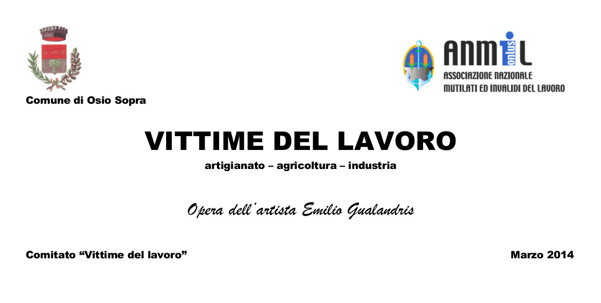
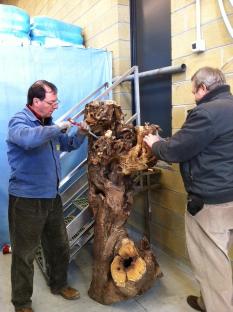
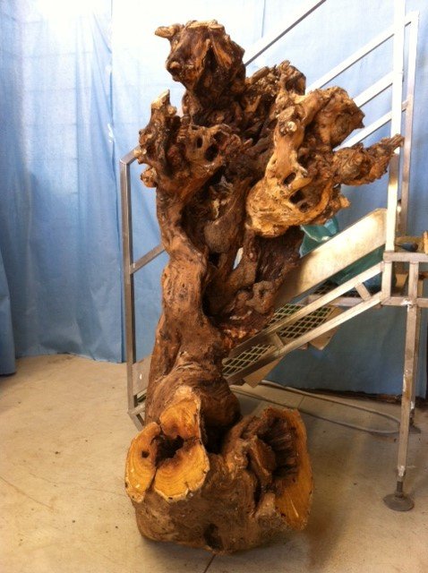
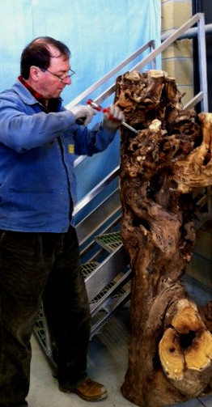

PARTECIPAZIONE ALLA REALIZZAZIONE DEL MONUMENTO
Alcuni membri della nostra Associazione hanno partecipato alla realizzazione del monumento dedicato alle "Vittime del lavoro".

Volantino di presentazione del comitato
In particolare la nostra attenzione si è
concentrata sul periodo di transizione fra la civilt√ contadina e la
fase pre-industriale che la nostra zona ha subito a cavallo fra il XIX
e il XX secolo.
Abbiamo proposta all'artista Emilio
Gualandris di inserire uno dei gelsi, oramai seccato, che tutti abbiamo
avuto occasione di vedere sulla strada che porta ad Osio Sotto, sulla
sinistra, dopo l'incrocio con Via Crocette.
A nostro avviso il gelso rappresenta
appunto l'anello di congiunzione fra la vita contadina e la vita dei
lavoratori nelle grandi industri manufatturiere della nostra zona.
A seguire alcune immagini della preparazione del gelso "mur√π" inserito nel monumento.
  